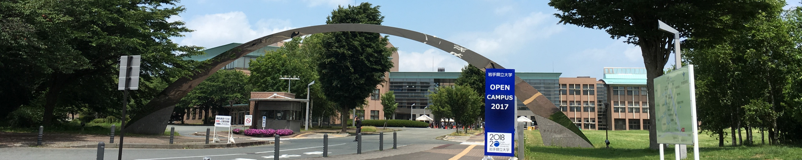

TAKI THE WARLD

- 

It is a way to move from Tokyo to Morioka by Shinkansen (Tohoku Shinkansen). On the Tohoku Shinkansen between Tokyo and Morioka, I will get on either train "Hayabusa" "Hayate" "Yamabiko".
Speed is fast in order of "Hayabusa" "Hayate" "Yamabiko".
It takes about 2 hours 20 minutes to 3 hours 15 minutes.
Tokyo - Morioka Shinkansen ticket (adults, one way)
Ordinary Car:Regular ticket 14, 230 ~ 14,740 yen
Green Car (first class cars):Regular tickets 17, 820~18, 330 yen
GranClass:Normal tickets 20, 910 ~ 23,470 yen
IGR (Iwate galaxy railway) is used to go from Morioka station to Takizawa station. The price is 370 yen. It takes about 20 minutes.